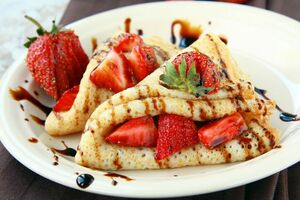

Meyveli Krep Rulosu

Malzemeler:
- 1 su bardağı un
- 2 yumurta
- 1 su bardağı süt
- 1 yemek kaşığı şeker
- 1 çay kaşığı vanilya özütü veya vanilin
- Tuz (yarım çay kaşığı)
- Çilek, muz, kivi gibi istediğiniz meyveler
- Pudra şekeri veya bal (isteğe bağlı)
Hazırlık:
- Un, yumurta, süt, şeker, vanilya özütü ve tuzu bir karıştırma kabında iyice çırpın. Pürüzsüz bir krep hamuru elde edene kadar karıştırın.
- Teflon bir tavaya veya krep tavasına az miktarda tereyağı veya yağ sürün ve ısıtın.
- Tavaya bir kepçe dolusu krep hamurundan dökün ve tavayı sallayarak hamurun yayılmasını sağlayın. Altı hafifçe kızarıncaya kadar pişirin, ardından spatula yardımıyla çevirerek diğer tarafını da pişirin.
- Pişen krepleri bir tabağa alın. Kreplerinizi sıcak veya soğuk olarak dilediğiniz şekilde doldurabilirsiniz.
- Kreplerinizi doldurmak için çilek dilimleri, muz dilimleri veya kivi dilimleri gibi meyveleri kreplerin üzerine yerleştirin.
- Krepleri rulo şeklinde sarın ve dilimleyerek servis tabağına alın.
- Üzerine pudra şekeri serperek veya bal gezdirerek tatlandırabilirsiniz.
- Meyveli krep rulosu hem hafif hem de lezzetli bir tatlı alternatifi olacaktır. Afiyet olsun!